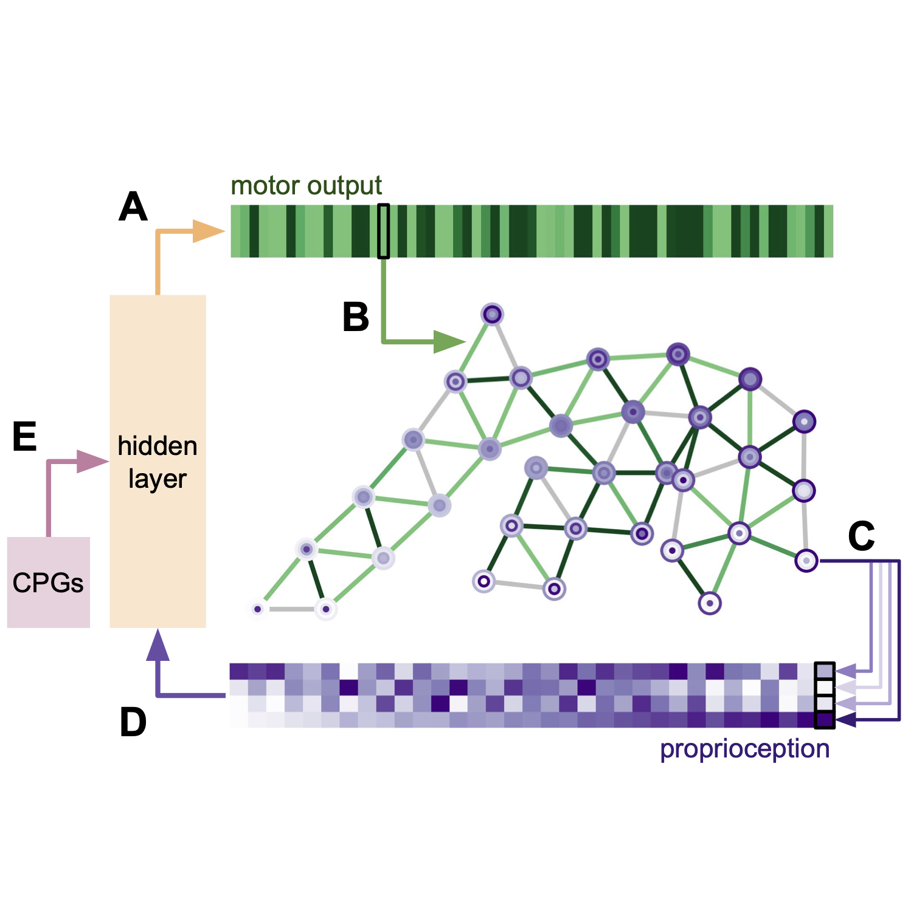
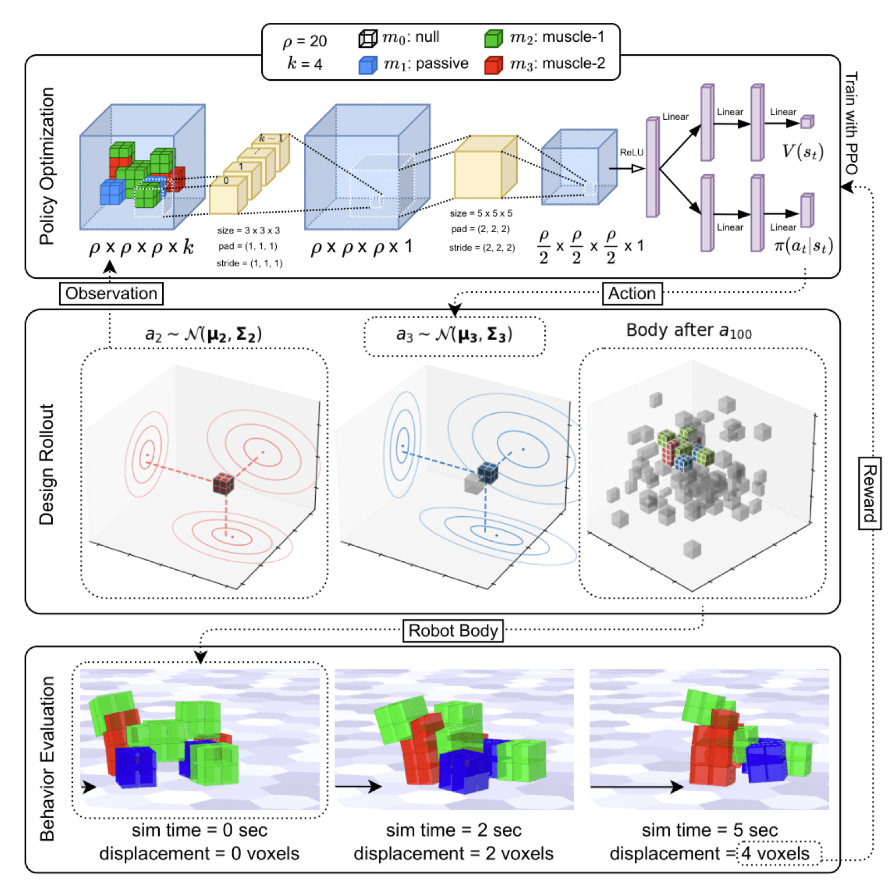
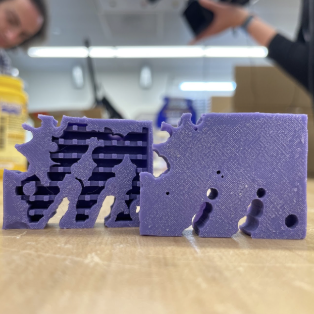
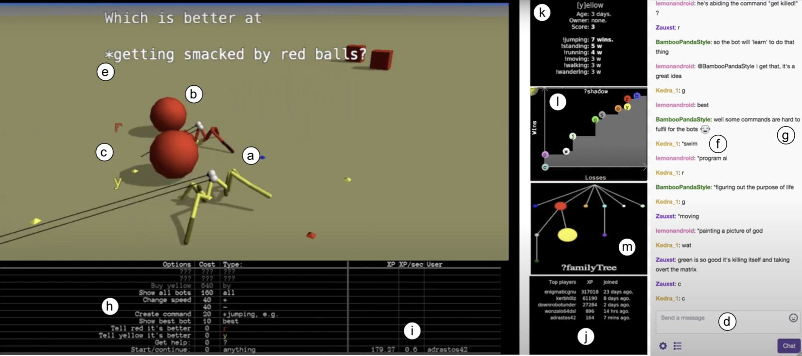
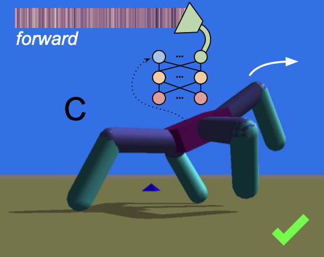

Research
I'm intersted in....
Some papers are highlighted .

Evolution and learning in differentiable robots
David Matthews ,
Tyler Hummer,
Sam Kriegman
Robotics: Science and
Systems Conference (RSS) , 2024
cite project page
/
code
/
paper

Reinforcement learning for freeform robot design
David Matthews ,
Sam Kriegman
IEEE ICRA , 2024
cite paper
Your browser does not support the video tag.

Efficient automatic design of robots
David Matthews ,
Andrew Spielberg,
Daniela Rus,
Sam Kriegman,
Josh Bongard
PNAS , 2023
cite
/
project page
/
code
/
paper

Crowd grounding: finding semantic and behavioral alignment through human robot interaction.
David Matthews ,
Josh Bongard
Conf. on Artificial Life (ALIFE). , 2020
cite code
/
paper

Word2vec to behavior: morphology facilitates the grounding of language in machines.
David Matthews ,
Sam Kriegman,
Collin Cappelle,
Josh Bongard
IEEE IROS , 2019
cite code
/
paper
Feel free to steal this website's source
code . Do not scrape the
HTML from this page itself, as it includes
analytics tags that you do not want on your
own website — use the github code
instead. Also, consider using Leonid
Keselman 's Jekyll
fork of this page.
{kind=link}